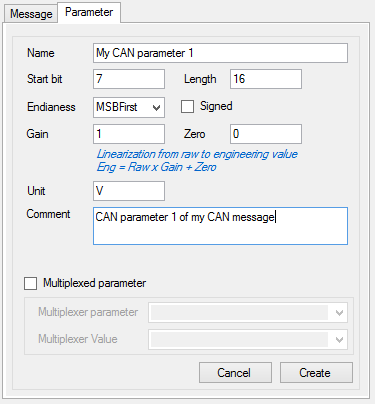

Once your message created, add some parameters (signals) to it by clicking the ‘New parameter' button  .
.

A CAN parameter has several important properties that need to be set with attention.
- Start bit: The index of the bit in the frame where the parameter starts. Whether parameter endianess is MSB or LSB (see below for details) start bit will be different.
- Length: The number of bits use by the parameter in the frame.
- Endianess: How the parameter engineering (or physical) value is encoded inside its bits. There two different endianesses, MSB first (Most significant byte first) also known as Motorola format and LSB first (Least significant byte first) also known as Intel format.
There are tons of documentation available on the web describing in great details the difference between those two formats. Basically, for a given value, let's say 50 000, its encoded value will be 0xC350 in MSB format, while it will be 0x50C3 in LSB format.
- Signedness: Indicating whether parameter sign (positive or negative) is considered for the parameter value encoding.
- Gain and Zero: Those are values used to scale the parameter value from the raw to the engineering format
- Name, unit and comment: Those properties are not essential but it may ease parameters identification and value exploitation.
- Multiplexed parameter: Use those settings if you want multiplex your message. See the ‘Multiplexed parameter' section for more details.
Once all properties set, click the ‘Create' button to add the parameter to the current message.
Created with the Personal Edition of HelpNDoc: Produce Kindle eBooks easily